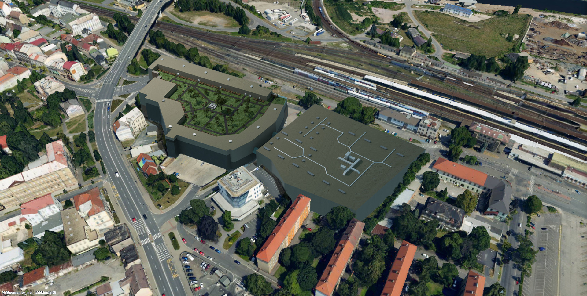
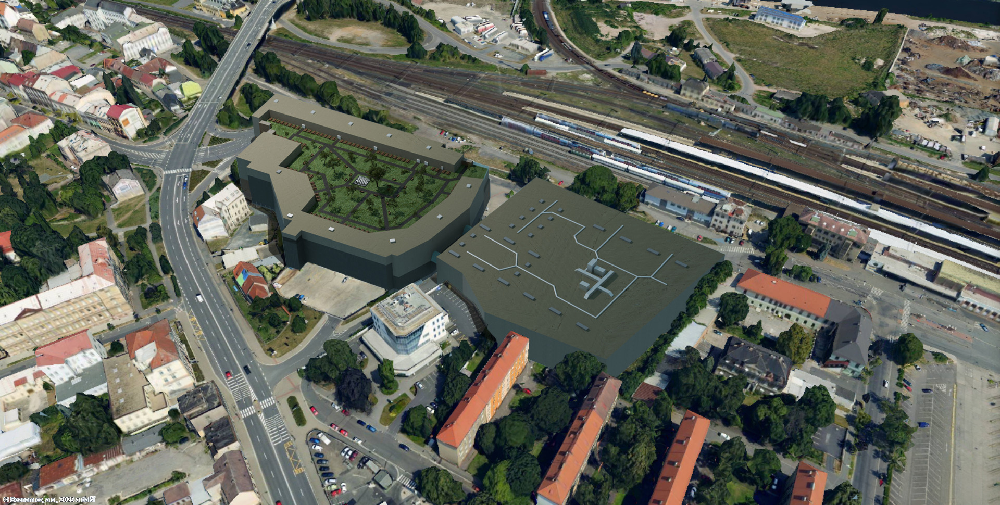

Velké ambice
budují velké věci
Arora je začínající developerská společnost zaměřená na inovativní a udržitelné
stavební projekty. Naším cílem je formovat novou tvář Kolína skrze moderní a funkční architekturu. Naše
mise je propojit estetiku s praktickým využitím a přinášet hodnotu pro komunitu.
Číst více
 
Zobrazit Galerii

Zobrazit Galerii